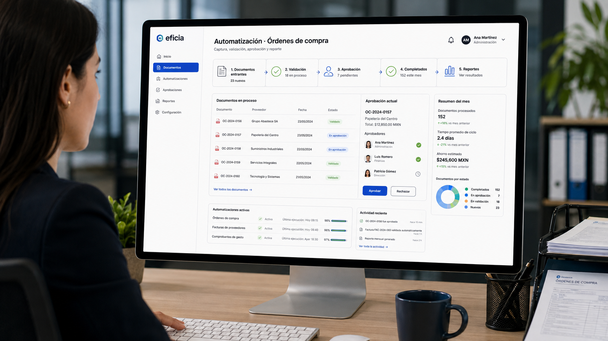

Soluciones de software empresarial para empresas en México.
Cuando el problema es repetir lo mismo una y otra vez.
Captura, documentos, aprobaciones, reportes y seguimiento pueden simplificarse para que tu equipo intervenga donde realmente aporta valor.
Conocer automatización
Cuando el problema es que tus herramientas no se hablan.
Conectamos sistemas para que la información llegue donde se necesita sin recapturas, archivos intermedios o seguimiento duplicado.
Conocer integraciones
Cuando el proceso necesita una herramienta propia.
Diseñamos sistemas internos, portales y aplicaciones alrededor de la forma real en que trabaja tu empresa.
Conocer software a la medida
La solución cambia. El resultado que buscamos es el mismo: una operación que funcione mejor.
Claridad
Qué pasa y qué sigue.
Consistencia
Reglas iguales para todos.
Velocidad
Menos pasos y esperas.
Escala
Crecer sin más carga.
Puede ser pequeño, grande o estar entre varias áreas.
Lo importante es entender qué parte de la operación necesita mejorar.
Contarnos el problema